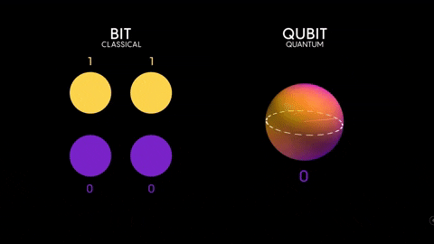
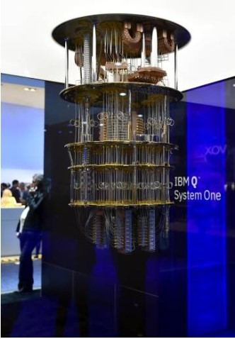

La principal característica de las computadoras cuánticas es que no funcionan con “bits” , sino con “qubits” (del inglés “bit cuántico”). Un qubit puede ser 0 , puede ser 1 y puede ser 0 y 1 a la vez, contándose así todas las posibilidades que hay entre que sea uno u otro, en otras palabras, un qubit puede superponerse y entrelazarse según las leyes de la física cuántica.
Esto hace que los ‘qubits’ , a diferencia de los ‘bits’, puedan tomar varios valores a la vez y puedan desarrollar cálculos que no puede hacer un ordenador convencional.
El número de qubits indica la cantidad de bits que pueden estar en superposición. Con los bits convencionales si teníamos un registro de tres bits había ocho valores posibles, y el registro sólo podía tomar uno de esos valores. En cambio, si tenemos un vector de tres qubits , la partícula puede tomar ocho valores distintos a la vez gracias a la superposición cuántica. Así, un vector de tres qubits permitiría un total de ocho operaciones paralelas. Como cabe esperar, el número de operaciones es exponencial con respecto al número de qubits.
De esta manera una computadora de 64 bits sería una computadora de 6464 bits. Para hacerse una idea del gran avance, un computador cuántico de 30 qubits equivaldría a un procesador convencional de 10 teraflops (10 millones de millones de operaciones en coma flotante por segundo), actualmente la supercomputadora Summit tiene la capacidad de procesar 200 petaflops. Un proceso que en una computadora convencional tardaría miles de años podría resolverse en minutos.
Para que las computadoras cuánticas funcionen correctamente necesitamos alcanzar temperaturas muy bajas, de aproximadamente 15 milikelvin . Recordemos que los grados kelvin son una escala basada en grados C° al que se le restan 273,15 grados C°; 0 kelvin es lo que se denomina 0 absoluto, no puede existir una temperatura mas baja que esta. 15 milikelvin son -272,82 C° es decir casi el 0 absoluto.
Para poner en perspectiva intentemos imaginar el punto del espacio más alejado de cualquier galaxia conocida, la temperatura de este punto es mayor a 15 milikelvin.
Por esta razón vemos en la anatomía de la actual computadora cuántica una estructura grande cuyo objetivo es ir enfriando por fases encontrandose el chip en la parte inferior..
Se va reduciendo la temperatura de unos 300 kelvin que hay a temperatura ambiente a 4 kelvin , luego a una escala de 1 kelvin para después poder llegar a la escala de milikelvin.